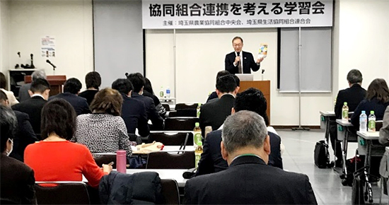
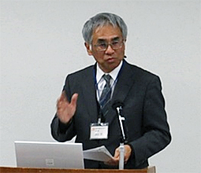

協同組合連携を考える学習会報告
協同組合連携が広がる茨城県での先進事例を学びました
埼玉県生活協同組合連合会
1月28日（月）10時より、埼玉県県民健康センター大会議室にて、協同組合が地域づくりの主体として、互いに地域で連携することで果たせる役割・可能性について最初に学ぶ場を、埼玉県農業協同組合中央会と埼玉県生活協同組合連合会が各々の組織や非営利協同組織などに呼びかけて開催し、関係団体から57人が参加しました。
【講演】
- JCAの取り組みとこれからの協同組合連携
- 日本協同組合連携機構 常務理事 青竹豊氏
- 茨城県での協同組合連携の実践について
- 協同組合ネットいばらき 副幹事 古山均氏
（茨城県生活協同組合連合会専務理事）

はじめに、主催者を代表して、埼玉県農業協同組合中央会若林龍司会長より、あいさつがありました。
JCAの青竹豊常務理事からは、JCA設立の背景や日本の協同組合の状況や連携の歴史について、さらには国連のSDGsと協同組合の理念や取り組みが重なることに触れながら、協同組合の役割として、地域課題解決への貢献が求められると話されました。

協同組合ネットいばらきの古山均副幹事からは、昨年の取り組みでとてもうれしかったこととして、フードバンク茨城とともに取り組んだ子ども支援プロジェクトには食品の提供や寄付、ボランティアの参加などさまざまな形で、34もの協同組合が一緒に取り組めたとの話がありました。協同組合連携の歩みは、2011年の東日本大震災への支援がきっかけになり、その後、協同組合キャラバンや地域見守り活動、福島の子ども保養プロジェクト、ピースアクションなど次々に広がっていったこと、近年は、子ども食堂や健康づくり、おたがいさま活動などにも広がっていることが話されました。
連携が広がっているポイントとして、①「ゆるやか」（まずはお互いのことを知ることから気負わずふつうに）②「あいのり」（「ネットいばらき」という大きな傘のもとに集まる あらゆるものに「ネットいばらき」をつける）③「やってみる」（気づいた団体が声をかけ、ダメもとで、まずはやってみる）を挙げられ、「困りごとを持ち寄れる」「何でも言い合える」「共感し合える」「できることを・できる人が・できる時に」の組織→「会員が光り輝くことによってのみ、光輝く」緩やかな組織とも説明されました。最後に連携の可能性について、JAも日本生協連も掲げる理念は同じであり、協同組合こそ地域社会の守り手である、また実践してこそ必要性や可能性が見えてくると力強く話され、結ばれました。
会の最後に、埼玉県生活協同組合連合会岩岡宏保会長理事より、今後の連携をよびかけました。